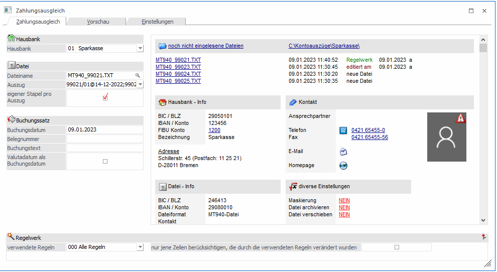
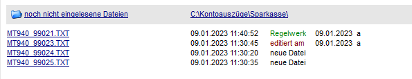
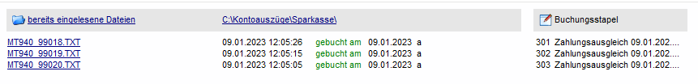

Das Programm-Modul Zahlungsausgleich (ZAGL) erlaubt das automatische Buchen von Eingangs- als auch Ausgangszahlungen auf Basis von Datenträgern, die von der Hausbank zur Verfügung gestellt werden (z.B. CREMUL-Dateien, die im V3-Format von den Banken zur Verfügung gestellt werden können). Zusätzlich können auch Kontoauszüge, die die Bank im MT940-Format (= SWIFT-Format) und im NON-SWIFT-Format ausgibt, eingelesen und gebucht werden.
Voraussetzung für das Einlesen von Überweisungen ist, dass die Kunden zur Zahlung die mit OCR/A bzw. OCR/B bedruckten Zahlscheine verwenden, und dass ein Verwendungszweck (Kontonummer + Fakturennummer, die gezahlt werden sollen) am Zahlschein angedruckt wurde - ODER die Zahlung über ein Telebanking-Programm unter Angabe des 12stelligen Verwendungszwecks erfolgt ist. Aufgrund dieser Information kann die WinLine FIBU erkennen, für welches Konto und für welche Faktura die Zahlung erfolgt ist.
Das Programm Modul Zahlungsausgleich ist Bestandteil der Standardauslieferung der Corporate WinLine. Für die WinLine ist der Zahlungsausgleich als Zusatzmodul verfügbar.
Das Modul Zahlungsausgleich
ü liest die Daten der Bank- ein
ü druckt die Übersichtsliste, welche die von der Bank bereitgestellten Gutschriften enthält
ü prüft die Bankdaten auf formale Richtigkeit
ü übernimmt die Bankdaten
ü legt die Zahlungseingänge auf einem Stapel (Nr. > 300) ab
ü berechnet und bucht Skonti
ü führt Ausgleiche oder Teilausgleiche der Offenen Posten durch
Gilt nur für Deutschland:
Zusätzlich zum MT940-Format können auch Dateien im DTAUS-Format eingelesen werden. In diesem Format ist es für Banken möglich, nur BAZ (Kundenzahlungen) bereitzustellen.
Hinweis 1
Wenn im Bankenstamm eingestellt ist, dass ein Bankkonto in einer Fremdwährung geführt wird, dann werden beim Zahlungsausgleich die Beträge in die Landeswährung umgerechnet bzw. (falls z.B. eine Faktura ebenfalls in dieser Fremdwährung erstellt worden ist) die Zahlung in FW gebucht und ggf. Kursdifferenzen erstellt.
Hinweis 2
Seit der Version 8.4 berücksichtigt der Zahlungsausgleich auch die in den Konten hinterlegten Steuerzeilen/-leisten. Somit erfolgt auch eine automatische Buchung der Steuer.
Hinweis 3
Sind im Sachkontenstamm Kostenrechnungsdaten (Kostenart, Kostenstelle, Kostenträger) hinterlegt bei einem Konto, welches im Zahlungsausgleich angesprochen wird, dann werden diese Daten in den ZAGL-Buchungsstapel mit übernommen. Sollten im Buchungsstapel die KORE-Daten nicht vollständig hinterlegt sein, wird beim Verbuchen des Stapels ein entsprechender Hinweis ausgegeben und der Stapel wird nicht verbucht, solange die Daten nicht vollständig im Buchungsstapel ergänzt wurden.
Hinweis 4
Alle generellen Einstellungen wie z.B. die Personenkontosuche oder Skontoberücksichtigung, welche für den Zahlungsausgleich gelten sollen, werden in dem Register Einstellungen vorgenommen. Die Einträge in der MESONIC.INI unter [ZAGL] haben somit keine Auswirkung mehr.
Der Aufruf des Zahlungsausgleiches erfolgt im Programmpunkt
1 WinLine FIBU
1 Buchen
1 Zahlungsausgleich

Vorbesetzungen für die Datenübernahme
Beim Einsatz des elektronischen Zahlungsverkehrs findet folgender Vorgang statt:
Im Zuge der Erstellung der Faktura werden Zahlscheine bedruckt und vom Kunden zum Ausgleich der Rechnung verwendet. Die Bank bearbeitet diese Zahlscheine weiter und erstellt eine Datei mit Zahlungsdaten.
Wesentliche Bestandteile dieser Daten sind Fakturen- und Debitorennummer. Auf Basis dieser Datei erzeugt der Zahlungsausgleich Buchungssätze für den Ausgleich und Teilausgleich der Fakturen.
Voraussetzung für eine reibungslose Übernahme ist das korrekte Ausfüllen der folgenden Datenfelder.
Hausbank
Ø Hausbank
Mit Cursor down können Sie aus der Auswahlbox die Bank auswählen, von der die Daten übernommen werden sollen. Die Felder mit der Adresse, Bankleitzahl/Kontonr., FIBU-Kontonr. werden aufgrund der Hinterlegungen im Bankenstamm automatisch befüllt.
Achtung
Damit der Zahlungsausgleich reibungslos funktionieren kann, muss die entsprechende Bank im Bankenstamm (Menüpunkt Stammdaten/Zahlungsstammdaten/Bankenstamm) ordnungsgemäß angelegt worden sein. D.h. im Bankenstamm muss auch die FIBU-Kontonummer der Bank hinterlegt worden sein.
Ø Dateiname
Eingabe des Dateinamens, in der sich die Daten zur Übernahme befinden. Durch Anklicken der Lupe kann in allen vorhandenen Laufwerken und Verzeichnissen nach der Übernahmedatei gesucht werden. Die Felder Dateiformat, Bankleitzahl/Kontonummer unter Datei-Info werden automatisch aufgrund der Übernahmedatei befüllt.
Hinweis
Dateien können auch mittels Drag & Drop in den Zahlungsausgleich geladen werden.
Ø Auszug
Befinden sich in der Kontoauszugsdatei mehrere Kontoauszüge, kann hierüber ausgewählt werden welche Kontoauszüge eingelesen werden sollen.
Ø Eigener Stapel pro Auszug
Die Checkbox wird freigeschaltet, sobald eine ZAGL-Datei mehr als einen Auszug enthält.
Ist die Checkbox aktiv, wird pro Auszug ein eigener ZAGL-Buchungsstapel erzeugt.
Ist die Checkbox nicht aktiv, werden die Buchungszeilen aller Auszüge in einen ZAGL-Buchungsstapel gestellt.
In der Stapelbezeichnung des ZAGL-Buchungsstapels werden die ersten 18 Zeichen von der Auszugsnummer angehängt, damit die Stapel leichter zu unterscheiden sind.
Hinweis:
Sollte das Programm keinen freien Stapel mehr finden (d.h. im Bereich von Stapelnummer 300 bis 399 sind alle Buchungsstapel belegt), wird der Import an dieser Stelle abgebrochen. Pro Stapel, der nicht mehr angelegt werden kann, kommt eine entsprechende Meldung.
Das Programm beginnt immer bei Stapelnummer 300 und sucht "nach unten" nach freien Nummern. Somit kann es also passieren, dass die angelegten Stapelnummern je nach bereits vorhandenen Stapelnummern nicht durchgehend hintereinander liegen.
Hinweis:
Wurden nicht alle Kontoauszüge einer MT940-Datei ausgewählt und der Buchungsstapel erzeugt, wird die komplette Datei verschoben (sofern die entsprechende Einstellung gesetzt ist) oder die Datei befindet sich in der Dateiliste "bereits eingelesene Dateien". Von dort aus kann die Datei nochmals ausgewählt, der noch zu verbuchende Kontoauszug markiert und eingelesen werden.
Buchungssatz
Ø Buchungsdatum
Datum, mit welchem der Buchungssatz für den Zahlungseingang erstellt wird. Existiert das Buchungsdatum in der Kontoauszugsdatei, wird dieses für den Buchungssatz herangezogen.
Ø Belegnummer
Hier kann eine Belegnummer eingetragen werden, die für alle Buchungszeilen der eingelesenen Datei verwendet werden soll. In den Einstellungen muss dazu die Option "Belegnummer immer übernehmen" aktiviert sein.
Ist die Belegnummer über eine Regel definiert, hat diese Vorrang.
Ø Buchungstext
Hier kann ein Buchungstext eingetragen werden, der für alle Buchungszeilen der eingelesenen Datei verwendet werden soll. In den Einstellungen muss dazu die Option "Buchungstext immer übernehmen" aktiviert sein.
Ist der Buchungstext über eine Regel definiert, hat dieser Vorrang.
Ø Valutadatum als Buchungsdatum
Für das Valutadatum existiert in der Tabelle der Vorschau eine separate Spalte.
Ist das Valutadatum in der MT940-Datei gefüllt, wird über Aktivierung dieser Option das Valutadatum als Buchungsdatum in den ZAGL-Buchungsstapel übernommen.
Hinweis:
Das Valutadatum / Buchungsdatum steuert, in welcher Periode der Buchungssatz verbucht wird.
Sollte das Valutadatum in einem anderen Wirtschaftsjahr liegen, lässt sich der ZAGL-Buchungsstapel nicht verbuchen.
Dateiliste

Ø Noch nicht eingelesene Dateien
Nach Auswahl der Hausbank werden bis zu neun Kontoauszugsdateien aus dem im Bankenstamm hinterlegten Zahlungsausgleich-Verzeichnis in der Dateiliste angezeigt, für die noch kein Buchungsstapel erzeugt wurde.
Die Dateiliste wird nur mit den Kontoauszugsdateien gefüllt, wenn ein Zahlungsausgleich-Verzeichnis im Bankenstamm hinterlegt ist. Ist kein Verzeichnis hinterlegt, werden die ersten neun txt-Dateien aus dem WinLine-Installationsverzeichnis in der Tabelle angezeigt.
Durch einen Klick auf den DrillDown "Noch nicht eingelesene Dateien" wird in die Dateiliste der bereits eingelesenen Dateien gewechselt.
Noch einzulesende Dateien können folgenden Status haben:
ü Neue Datei
Die Datei wurde noch
nicht in der Vorschau betrachtet
ü Regelwerk
Die Datei wurde
bereits (mind. 1x) in der Vorschau betrachtet und das Regelwerk angewendet
ü Editiert am
Die Datei wurde in
der Vorschau betrachtet, das Regelwerk angewendet und bearbeitet über den
"Bearbeiten-Button"
Ø Bereits eingelesene Dateien
Durch einen Klick auf den DrillDown "Noch nicht eingelesene Dateien" wird in die Dateiliste der bereits eingelesenen Dateien gewechselt.
In dieser Dateiliste werden die MT940-Dateien aufgelistet, für die ein Buchungsstapel erstellt wurde.
Nur wenn die Option "Datei verschieben" nicht aktiviert ist, werden erfolgreich eingelesene Dateien in der Liste der bereits eingelesenen Dateien aufgeführt.

Ø Zahlungsausgleich-Verzeichnis / Kein Verzeichnis eingetragen
Anzeige des im Bankenstamm eingetragenen Zahlungsausgleich-Verzeichnisses.
Ist kein Zahlungsausgleich-Verzeichnis im Bankenstamm für die ausgewählte Hausbank hinterlegt, wird der DrillDown "Kein Verzeichnis eingetragen" angezeigt.
Über diesen DrillDown öffnet sich der Bankenstamm / Register Zahlungsausgleich.
div. Einstellungen
Ø Maskierung / Datei archivieren / Datei verschieben
Die Einstellungen (JA / NEIN), die in diesem Bereich durch Klicken auf den jeweiligen DrillDown getroffen werden, stehen auch im Register Einstellungen als eigene Option zur Verfügung.
Veränderungen dieser Einstellung gelten für die einzulesende Datei und werden dauerhaft in dem Register Einstellungen über den Button "Einstellungen speichern" gespeichert.
Ø verwendete Regeln
Über diese Combobox wird eine Regelgruppe ausgewählt, der im Regelwerk diverse Regeln zugeordnet sind. Es werden dann nur die Regeln dieser Regelgruppe für die Vervollständigung der Buchungssätze in der Vorschau berücksichtigt. Im Regelwerk können vorab bereits Regeln hinterlegt werden, mit denen die Eingabefelder im Regel-Assistenten bereits gefüllt werden. Die Anlage der Regelgruppen selbst erfolgt über den Button Regelwerk.
Ø Nur jene Zeilen berücksichtigen, die durch die verwendeten Regeln verändert wurden:
Durch Aktivierung erhalten Sie in der Vorschau nur die durch die zuvor gewählte Regelgruppe veränderten Übernahmezeilen als Buchungssätze angezeigt. Außerdem werden auch die Zeilen, die aufgrund einer hinterlegten Bankverbindung ein Gegenkonto zugeordnet bekommen haben, angezeigt.
Wird diese Option nicht aktiviert, werden alle Datensätze aus der Bankdatei in der Vorschau angezeigt.
Buttons
Ø Buchungsstapel erzeugen
Durch Anklicken des Buchungsstapel erzeugen - Buttons wird der Zahlungsausgleich durchgeführt, wobei alle Buchungen in den nächsten freien Zahlungsstapel ab Stapelnummer 300 abgelegt werden. Die Buchungen können dann durch Anwahl des Menüpunktes Buchen/ Buchen/Dialog-Stapel und Laden des ZAGL-Buchungsstapels verbucht werden.
Ø Ende
Durch Anklicken des Ende-Buttons wird der Programmpunkt beendet.
Ø Wiederherst.
Durch Anklicken des Wiederherst.-Buttons werden die Eingaben der Maskierung auf die Werte zurückgesetzt, die während der letzten Speicherung verändert wurden.
Ø Einstellungen speichern
Die Einstellungen können nur in dem Register Einstellungen gespeichert werden, deshalb ist der Button in diesem Fenster nicht aktiv.
Ø Druckvorschau
Durch Anklicken des Druckvorschau-Buttons wird die Zahlungsausgleichsliste auf das ausgewählte Medium (Spooler oder Drucker) ausgegeben.
Ø Bankenstamm
Über diesen Button kann in den Bankenstamm in das Register Zahlungsausgleich verzweigt werden.
Ø Regelwerk
Sie können durch Anklicken des Regelwerk-Buttons bestimmte Verarbeitungsregeln für bestimmte importierte Feldinhalte im Fenster Regelassistent festlegen.
Sämtliche Regeln greifen auf die Buchungsnotiz. Es wird im gesamten Text gesucht.
Formale Prüfungen
Der Zahlungsausgleich geht bei der Übernahme der Daten wie folgt vor:
Ø Debitor
Ist der Debitor nicht vorhanden, erfolgt die Buchung auf das Interimskonto, das im Feld "Div. Nicht geführt Deb." (= diverse nicht geführte Debitoren) festgelegt wurde.
Ø Offene Posten-Nummer
Ist die Fakturennummer des Zahlungsbeleges nicht in der Offenen Posten-Liste gespeichert, wird automatisch eine Vorauszahlung eröffnet. Diese Vorgehensweise gilt sowohl für Debitoren- als auch für Kreditorenzahlungen.
Ø Skontofristen
Ist der Zahlungsbetrag niedriger als der Fakturenbetrag, werden die Skontokonditionen berücksichtigt. Sollen zusätzlich noch die Skontotoleranzen aus der Zahlungskondition berücksichtigt werden, dann muss im FIBU-Parameter unter Buchen die Checkbox "Skontotoleranzen beim Vorschlag berücksichtigen" aktiviert sein. Ist diese Grenze überschritten, wird die Zahlung als Teilzahlung ohne Ausgleich der Offenen Faktura behandelt.
Hinweise für den Einsatz des Zahlungsausgleiches in Verbindung mit der WinLine FAKT
Das von der Bank verarbeitete Feld Verwendungszweck (Kundennummer und Belegnummer) ist zwölfstellig. Daher muss bei der Stammdatenanlage darauf geachtet werden, dass die Länge der Kontonummer und der Belegnummer in Summe zwölf Stellen nicht überschreitet. Darüber hinaus werden alle nicht numerischen Zeichen (Buchstaben, Leerschritte, Sonderzeichen) von der Bank in Nullen umgewandelt.
Mit Hilfe der Maske Belegnummer und Kontonummer können nicht-numerische Teile, die in Nullen umgewandelt wurden, wieder zurückgesetzt werden.
Beispiel
Fakturennr. In der Auftragsbearbeitung 1234-FA
Kundennr. in der Auftragsbearbeitung 12345
Verwendungszweck 123451234000
Maske Kundennummer #####I_II_I
Maske Belegnummer ####-FA
I_II_I bedeutet die Eingabe von zwei Leerzeichen.
Alle Kundenkontonummern sollten die gleiche Länge aufweisen. Erfüllt ein Konto nicht die vorgegebene Standard-Länge, wird es im Feld Verwendungszweck mit Folgenullen aufgefüllt.
Bei der Übergabe der Datensätze in die FIBU werden dann von rechts beginnend die Nullen wieder entfernt und nach jedem Durchgang geprüft, ob ein entsprechendes Konto vorhanden ist. Sollten mehrere Konten vorhanden sein, die sich nur durch die Anzahl der rechts befindlichen Nullen unterscheidet, kann es zu Fehlzuordnungen kommen.
Voraussetzungen
Um eine automationsunterstützte Verarbeitung Ihrer Zahlscheine durch die Bank zu gewährleisten, ist der Einsatz eines Zahlscheines, der mit OCRB-Schrift bedruckt wird, notwendig.